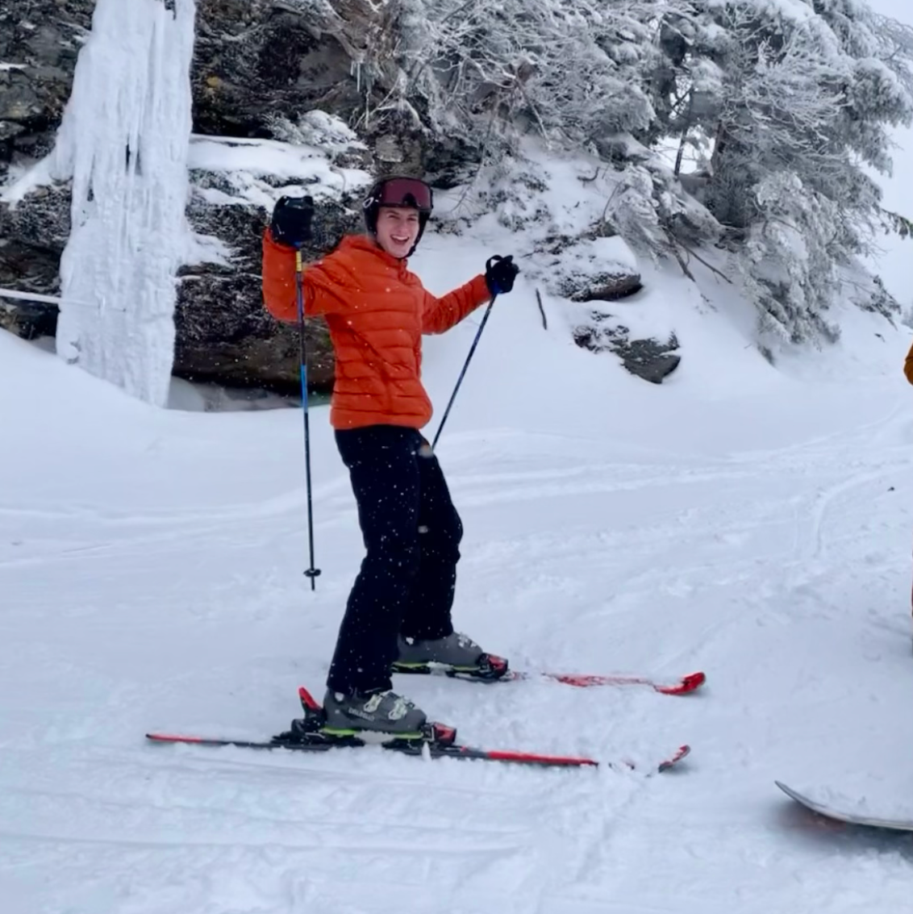

Name: Tori Alves
Role: President
Year: Junior
Major: Wildlife Ecology and Conservation
Minor: Statistical Data Analytics
Fun Fact: I'm an avid lord of the rings fan!
Name: Sasha Altman
Role: Vice-President
Year: Junior
Major: Environmental Studies & Public Policy
Minor: French
Fun Fact: I prefer roller blading over walking!
Name: Melissa Shapiro
Role: Secretary
Year: Junior
Major: Human Services
Minor: Disability Studies
Fun Fact: My favorite place I traveled to was Hawaii!
Name: Sydney Johston
Role: Social Media Coordinator
Year:
Major:
Minor:
Fun Fact:

Name: Aidan Greenhalgh
Role: Special Events Coordinator
Year: Sophomore
Major: Environmental Engineering
Minor: Environmental and Energy Policy
Fun Fact: I have a twin!
Name: Matt Nadar
Role: Treasurer
Year: Sophomore
Major: Computer Science
Minor: Sociology
Fun Fact: I'm a member of the color guard in the marching band at UD! I also love to play guitar.